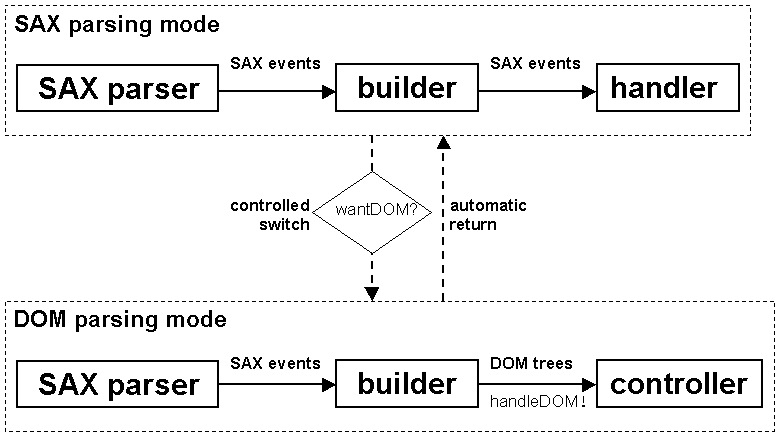

|
Devsphere.com |
|||||||||
| PREV CLASS NEXT CLASS | FRAMES NO FRAMES | |||||||||
| SUMMARY: NESTED | FIELD | CONSTR | METHOD | DETAIL: FIELD | CONSTR | METHOD | |||||||||
java.lang.Object
|
+--org.xml.sax.helpers.DefaultHandler
|
+--com.devsphere.xml.saxdomix.SDXBuilderT
This class provides the same SAX 2.0 - DOM Level 2 parsing functionality
as SDXBuilder implemented differently. However, instead of
building the DOM sub-trees itself, the builder uses a helper for this task.
The default helper (DefaultSDXHelper) uses the TrAX API,
which is part of JAXP 1.1 in order to construct the DOM sub-trees.
Using this class with the default helper has the advantage that
the DOM sub-trees are actually constructed by the used XML parser.
The default helper uses TrAX to transform the sequences of SAX events
into document fragments. There is, however, a disadvantage: there are
parsers like Apache Xerces and Apache Crimson that support JAXP 1.1 without
TrAX. If you want to use these with SDXBuilderT, you'll
also have to install the Apache Xalan XSLT processor, which implements
the TrAX API. This will increase to footprint of your application.

Each builder object needs from the application a SAX content
handler (org.xml.sax.ContentHandler) and a controller
(com.devsphere.xml.saxdomix.SDXController). Any builder
also has an internal wantDOM flag.
The application receives the SAX events via the content handler
as long as the wantDOM flag is false.
During the SAX parsing, the builder object invokes the controller's
wantDOM() method for each startElement()
parsing event. If wantDOM() returns false
the SAX parsing mode continues. When wantDOM() returns
true the value of the internal wantDOM flag
is switched to true and the builder starts feeding the helper
with SAX events, which aren't forwarded to the application anymore.
The helper object is responsible for constructing DOM sub-trees.
The building of a sub-tree ends after the endElement()
event that corresponds to the startElement() event whose
associated wantDOM() call returned true.
The DOM sub-tree, whose root is an org.w3c.dom.Element
object is passed to the controller's handleDOM() method.
After this, the wantDOM flag is switched automatically to
false re-enabling the SAX parsing. The application will
receive SAX events until the controller's wantDOM() returns
true for another element or the end of the parsed document
is reached.
A DOM sub-tree is made of five types of DOM objects:
org.w3c.dom.Element
org.w3c.dom.Text
org.w3c.dom.CDATASection
org.w3c.dom.Comment
org.w3c.dom.ProcessingInstructionAs mentioned above, the whole DOM sub-trees are created with a helper object.
In most cases you'll let the framework use its own
DefaultSDXHelperT, but you may provide your own implementation
of the SDXHelperT interface, which is declared in the
com.devsphere.xml.saxdomix.helpers package.
The entity references are expanded.
If the class of the content handler object implements
org.xml.sax.ext.LexicalHandler, the application will also
receive comment(), startCDATA() and
endCDATA() SAX lexical events during the SAX parsing mode.
In conclusion, the builder is initially in SAX parsing mode, which means
that SAX events are forwarded to a content handler provided by the
application. During the SAX parsing, the wantDOM() method of
a controller object is called for each element start.
When wantDOM() returns true, the builder forwards
the SAX events to a helper for building a DOM sub-tree, which is then passed
for handling to the handleDOM() method of the controller object.
During the DOM building, the wantDOM() method is NOT called.
The builder switches to the SAX parsing mode automatically when the DOM
sub-tree is completed. This process is repeated until the end of the parsed
document, which means that multiple DOM sub-trees can be constructed during
the parsing of a single XML document. All SAX events that aren't used to
build the sub-trees are passed to the application's content handler.
SDXBuilderT extends the DefaultHandler
SAX helper class, but overrides only the methods of the
ContentHandler SAX interface. It also implements the
LexicalHandler SAX extension. A SAX parser is needed in order
to feed the builder with SAX events. Some of these events will be forwarded
to the application's content handler and the others will be passed to the
helper object as described above.
There are two ways to use SDXBuilderT: you may pass it to
the parse() method of a JAXP SAXParser or you may
register it as content handler to a SAX XMLReader and then call
its parse() method. In the second case you could create
a JAXP SAXParser and then obtain the SAX XMLReader
using the getXMLReader() method of the SAXParser
object.
Usage 1:
org.xml.sax.ContentHandler handler = ...
SDXController controller = ...
org.xml.sax.helpers.DefaultHandler builder
= new SDXBuilderT(handler, controller);
javax.xml.parsers.SAXParser saxParser = ...
saxParser.getXMLReader().setProperty(
"http://xml.org/sax/properties/lexical-handler", builder);
java.io.InputStream in = ...
saxParser.parse(in, builder);
If the default error handling or entity resolving mechanisms
don't suit the needs of your application or you need information about
unparsed entities and notations, then you should subclass
SDXBuilderT and override the methods defined
by the ErrorHandler, EntityResolver
and DTDHandler SAX interfaces.
Usage 2:
org.xml.sax.ContentHandler handler = ...
SDXController controller = ...
org.xml.sax.ContentHandler builder
= new SDXBuilderT(handler, controller);
org.xml.sax.XMLReader xmlReader = ...
xmlReader.setContentHandler(builder);
xmlReader.setProperty(
"http://xml.org/sax/properties/lexical-handler", builder);
xmlReader.setErrorHandler(...);
org.xml.sax.InputSource in = ...
xmlReader.parse(in);
In this case, you should always register an error handler. (If you don't
have one then register a DefaultHandler as error handler.)
If the default entity resolving mechanism doesn't suit the needs of your application and you need information about unparsed entities and notations, then register an entity resolver and a DTD handler to the XML reader.
SDXController,
SDXHelperT,
DefaultSDXHelperT| Field Summary | |
protected SDXController |
controller
The controller provided by the application |
protected org.xml.sax.ContentHandler |
handler
The SAX content handler provided by the application |
protected SDXHelperT |
helper
The helper object that transforms the SAX events into DOM sub-trees |
protected int |
level
The level of the current element of the current DOM sub-tree |
protected org.xml.sax.ext.LexicalHandler |
lexicalHandler
A cast to the content handler or null if its class doesn't implement LexicalHandler |
protected boolean |
wantDOM
The flag that indicates the current parsing mode (false means SAX; true means DOM) |
| Constructor Summary | |
SDXBuilderT(org.xml.sax.ContentHandler handler,
SDXController controller)
Creates a builder that forwards the SAX events to the given handler, switches to DOM when the wantDOM() method of the given
controller returns true and also passes the DOM sub-trees to the
controller's handleDOM() method. |
|
SDXBuilderT(org.xml.sax.ContentHandler handler,
SDXController controller,
SDXHelperT helper)
Creates a builder that forwards the SAX events to the given handler, switches to DOM when the wantDOM() method of the given
controller returns true and also passes the DOM sub-trees to the
controller's handleDOM() method. |
|
| Method Summary | |
void |
characters(char[] ch,
int start,
int length)
Calls the method with the same name of the handler object or passes the SAX event to the helper object depending on the value of the wantDOM flag. |
void |
comment(char[] ch,
int start,
int length)
Calls the method with the same name of the handler object or passes the SAX event to the helper object depending on the value of the wantDOM flag. |
void |
endCDATA()
Calls the method with the same name of the handler object or passes the SAX event to the helper object depending on the value of the wantDOM flag. |
void |
endDocument()
Calls the method with the same name of the handler object. |
void |
endDTD()
Does nothing. |
void |
endElement(java.lang.String namespaceURI,
java.lang.String localName,
java.lang.String qualifiedName)
Calls the method with the same name of the handler object or passes the SAX event to the helper object depending on the value of the wantDOM flag. |
void |
endEntity(java.lang.String name)
Does nothing. |
void |
processingInstruction(java.lang.String target,
java.lang.String data)
Calls the method with the same name of the handler object or passes the SAX event to the helper object depending on the value of the wantDOM flag. |
void |
setDocumentLocator(org.xml.sax.Locator locator)
Calls the method with the same name of the handler object passing the given locator as parameter. |
void |
startCDATA()
Calls the method with the same name of the handler object or passes the SAX event to the helper object depending on the value of the wantDOM flag. |
void |
startDocument()
Calls the method with the same name of the handler object and initializes some of the fields of this object. |
void |
startDTD(java.lang.String name,
java.lang.String publicId,
java.lang.String systemId)
Does nothing. |
void |
startElement(java.lang.String namespaceURI,
java.lang.String localName,
java.lang.String qualifiedName,
org.xml.sax.Attributes attributes)
Calls the method with the same name of the handler object or passes the SAX event to the helper object depending on the value of the wantDOM flag. |
void |
startEntity(java.lang.String name)
Does nothing. |
| Methods inherited from class org.xml.sax.helpers.DefaultHandler |
endPrefixMapping, error, fatalError, ignorableWhitespace, notationDecl, resolveEntity, skippedEntity, startPrefixMapping, unparsedEntityDecl, warning |
| Methods inherited from class java.lang.Object |
clone, equals, finalize, getClass, hashCode, notify, notifyAll, toString, wait, wait, wait |
| Field Detail |
protected org.xml.sax.ContentHandler handler
protected SDXController controller
protected org.xml.sax.ext.LexicalHandler lexicalHandler
LexicalHandler
protected SDXHelperT helper
protected boolean wantDOM
SAX; true means DOM)
protected int level
| Constructor Detail |
public SDXBuilderT(org.xml.sax.ContentHandler handler,
SDXController controller)
wantDOM() method of the given
controller returns true and also passes the DOM sub-trees to the
controller's handleDOM() method. The created builder
will use a DefaultSDXHelperT to create the DOM sub-trees.
handler - The application's SAX ContentHandlercontroller - The application's SDXController
java.lang.NullPointerException - If one of the parameters is null
public SDXBuilderT(org.xml.sax.ContentHandler handler,
SDXController controller,
SDXHelperT helper)
wantDOM() method of the given
controller returns true and also passes the DOM sub-trees to the
controller's handleDOM() method. The created builder
will use the given helper to create the DOM sub-trees.
handler - The application's SAX ContentHandlercontroller - The application's SDXControllerhelper - The application's optional SDXHelperT
java.lang.NullPointerException - If one of the parameters is null| Method Detail |
public void setDocumentLocator(org.xml.sax.Locator locator)
setDocumentLocator in interface org.xml.sax.ContentHandlersetDocumentLocator in class org.xml.sax.helpers.DefaultHandlerlocator - The SAX Locator object
public void startDocument()
throws org.xml.sax.SAXException
startDocument in interface org.xml.sax.ContentHandlerstartDocument in class org.xml.sax.helpers.DefaultHandlerorg.xml.sax.SAXException - Error reported by the handler's method
public void endDocument()
throws org.xml.sax.SAXException
endDocument in interface org.xml.sax.ContentHandlerendDocument in class org.xml.sax.helpers.DefaultHandlerorg.xml.sax.SAXException - Error reported by the handler's method
public void startElement(java.lang.String namespaceURI,
java.lang.String localName,
java.lang.String qualifiedName,
org.xml.sax.Attributes attributes)
throws org.xml.sax.SAXException
wantDOM flag.
startElement in interface org.xml.sax.ContentHandlerstartElement in class org.xml.sax.helpers.DefaultHandlernamespaceURI - The element's namespace URIlocalName - The element's local namequalifiedName - The element's qualified nameattributes - The element's attributes
org.xml.sax.SAXException - Error reported by the handler or helper
public void endElement(java.lang.String namespaceURI,
java.lang.String localName,
java.lang.String qualifiedName)
throws org.xml.sax.SAXException
wantDOM flag. The completed DOM sub-trees are passed
to the controller's handleDOM() method.
endElement in interface org.xml.sax.ContentHandlerendElement in class org.xml.sax.helpers.DefaultHandlernamespaceURI - The element's namespace URIlocalName - The element's local namequalifiedName - The element's qualified name
org.xml.sax.SAXException - Error reported by the handler or helper
public void characters(char[] ch,
int start,
int length)
throws org.xml.sax.SAXException
wantDOM flag.
characters in interface org.xml.sax.ContentHandlercharacters in class org.xml.sax.helpers.DefaultHandlerch - The characters from the XML documentstart - The start position in the arraylength - The number of characters to get from the array
org.xml.sax.SAXException - Error reported by the handler or helper
public void processingInstruction(java.lang.String target,
java.lang.String data)
throws org.xml.sax.SAXException
wantDOM flag.
processingInstruction in interface org.xml.sax.ContentHandlerprocessingInstruction in class org.xml.sax.helpers.DefaultHandlertarget - The target of the processing instruction.data - The data of the processing instruction.
org.xml.sax.SAXException - Error reported by the handler or helper
public void startDTD(java.lang.String name,
java.lang.String publicId,
java.lang.String systemId)
throws org.xml.sax.SAXException
startDTD in interface org.xml.sax.ext.LexicalHandlername - The name of the document's root element.publicId - The public identifier of the external DTDsystemId - The system identifier of the external DTD
org.xml.sax.SAXException - Cannot be thrown since the method does nothing
public void endDTD()
throws org.xml.sax.SAXException
endDTD in interface org.xml.sax.ext.LexicalHandlerorg.xml.sax.SAXException - Cannot be thrown since the method does nothing
public void startEntity(java.lang.String name)
throws org.xml.sax.SAXException
startEntity in interface org.xml.sax.ext.LexicalHandlername - The name of an entity
org.xml.sax.SAXException - Cannot be thrown since the method does nothing
public void endEntity(java.lang.String name)
throws org.xml.sax.SAXException
endEntity in interface org.xml.sax.ext.LexicalHandlername - The name of an entity
org.xml.sax.SAXException - Cannot be thrown since the method does nothing
public void startCDATA()
throws org.xml.sax.SAXException
wantDOM flag.
startCDATA in interface org.xml.sax.ext.LexicalHandlerorg.xml.sax.SAXException - Error reported by the handler or helper
public void endCDATA()
throws org.xml.sax.SAXException
wantDOM flag.
endCDATA in interface org.xml.sax.ext.LexicalHandlerorg.xml.sax.SAXException - Error reported by the handler or helper
public void comment(char[] ch,
int start,
int length)
throws org.xml.sax.SAXException
wantDOM flag.
comment in interface org.xml.sax.ext.LexicalHandlerch - An array holding the characters in the commentstart - The start position in the arraylength - The number of characters to get from the array
org.xml.sax.SAXException - Error reported by the handler or helper
|
Devsphere.com |
|||||||||
| PREV CLASS NEXT CLASS | FRAMES NO FRAMES | |||||||||
| SUMMARY: NESTED | FIELD | CONSTR | METHOD | DETAIL: FIELD | CONSTR | METHOD | |||||||||